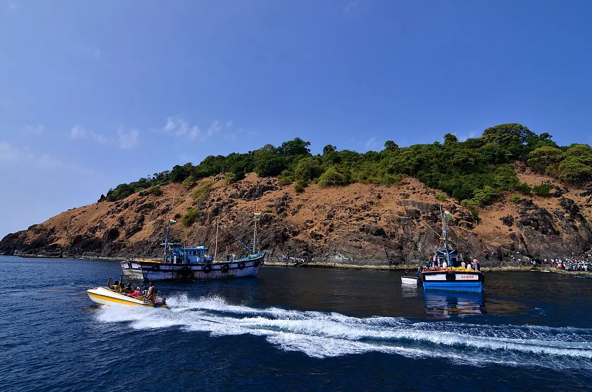

Île de Netrani
Karnataka, Inde · plongée, snorkeling

Île rocheuse en forme de cœur au large de Murudeshwar, l’un des sites de plongée les plus réputés de la côte ouest indienne. Les plongées se font autour des rochers, parmi coraux et poissons de récif.
- Lieu
- Karnataka, Inde
- Niveau
- Intermédiaire
- Activités
- plongée, snorkeling
- Type d'eau
- Mer / océan
- Coordonnées
- 14.02, 74.33 (position approximative du secteur)
Dangers à connaître
- Pleine mer : houle et courants possibles.
- Île aussi utilisée pour des exercices militaires : accès encadré, à vérifier localement.
Le conseil d'Ocean Buddy
La saison va à peu près de novembre à mai : réserve avec un centre de Murudeshwar et renseigne-toi sur la visibilité, très variable.
Ouvrir dans Ocean Buddy Télécharger sur l'App Store
Source : Fiche Ocean Buddy · septembre 2026 · à vérifier localement.